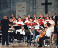

|
Overton Choral Society Numbering 20 to 30 singers, the choir presents at least 3 concerts a year. We participate every year in the Winchester County Music Festival, coming together with other choirs from Hampshire and a professional orchestra and soloists to perform in either Romsey Abbey or Winchester Cathedral. Our annual workshop gives new or occasional singers the opportunity to meet the choir and have a good day of singing. Our conductor is Paul Timms of Andover, who is a former Director of Music at Farleigh School and is now an independent music teacher. Our long serving accompanist is Nicholas Hussey. Over the past few years Overton Choral Society has developed links with two European Choirs and several exchange visits have taken place between the three choirs. Our French partners are the Ensemble Arnaut de Mareuil from Périgueux, and from Germany the Sängerkreis Euskirchen. There have been a number of exchange visits both ways. In 2008 we visited Euskirchen for a joint performance of Haydn's Creation. In May 2015 the Sängerkreis Euskirchen visited us in Overton. We were able to return their excellent hospitality and the weekend concluded with a joint concert, singing extracts from Brahms Requiem and other sacred works. Overton Choral Society is a member of the National Federation of Music Societies. Contact the Society Secretary: Ruth Knight Email: secretary@overtonchoralsociety.org.uk Web: http://overtonchoralsociety.org.uk |
Click image to view |